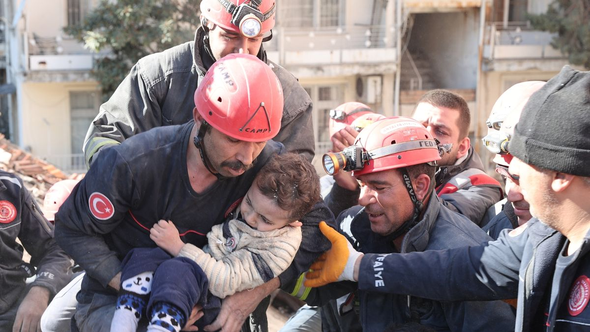

The Syrian American Medical Society provides healthcare and medical relief to people in Syria and neighboring countries affected by conflict and displacement.
Ahbap
Ahbap is an aid organization that blends Anatolian cultural heritage with modern knowledge and technology to create a future based on solidarity, sharing, and love. It aims to provide help to those in need, promote awareness of solidarity, support sustainable networks of cooperation, and preserve and develop local culture for the future.
The Center for Disaster Philanthropy
The Center for Disaster Philanthropy provides education, training, and resources to donors and philanthropic organizations to improve disaster preparedness, response, and recovery.
Embrace Relief
Embrace Relief is a non-profit organization that focuses on providing humanitarian aid and disaster relief to underserved communities around the world. The organization also works on global health initiatives and participates in disaster response efforts around the world.
Akut
website of the Search and Rescue Association, a Turkish non-governmental organization that provides emergency response and search and rescue services in disasters and emergencies in Turkey and abroad.
The Turkey Earthquake Relief Fund
The Turkey Earthquake Relief Fund is a vital effort launched by the Turkish Philanthropy Funds to support those affected by the earthquake in Turkey. This fund provides emergency aid and resources to help individuals and communities recover and rebuild.

The Disaster Emergency Committee
The Disaster Emergency Committee is a UK-based organization that brings together 14 leading UK aid agencies to raise funds and provide humanitarian assistance in emergencies and disasters around the world.
Doctors Without Borders
Doctors Without Borders/Médecins Sans Frontières (MSF) is an international medical humanitarian organization that provides medical care and assistance to people affected by conflicts, epidemics, and disasters in over 70 countries.
Plan International
Plan International is an international development organization that works to advance children's rights and equality for girls, with a focus on education, health, and protection in more than 75 countries.
Islamic Relief USA
Islamic Relief USA is a humanitarian organization committed to providing aid in a dignified manner, regardless of gender, race, or religion. They are dedicated to delivering earthquake relief to both Turkey and Syria. Their goal is to empower individuals and communities, giving them a voice in the world and enabling them to take control of their own lives through access to resources and support.
Syria Forum USA
Syria Forum USA is an organization dedicated to promoting awareness of the ongoing crisis in Syria and providing humanitarian aid to those affected by the crisis.
The Disaster Emergency Committee is a UK-based organization that brings together 14 leading UK aid agencies to raise funds and provide humanitarian assistance in emergencies and disasters around the world.
Doctors Without Borders
Doctors Without Borders/Médecins Sans Frontières (MSF) is an international medical humanitarian organization that provides medical care and assistance to people affected by conflicts, epidemics, and disasters in over 70 countries.
Plan International
Plan International is an international development organization that works to advance children's rights and equality for girls, with a focus on education, health, and protection in more than 75 countries.
Islamic Relief USA
Islamic Relief USA is a humanitarian organization committed to providing aid in a dignified manner, regardless of gender, race, or religion. They are dedicated to delivering earthquake relief to both Turkey and Syria. Their goal is to empower individuals and communities, giving them a voice in the world and enabling them to take control of their own lives through access to resources and support.
Syria Forum USA
Syria Forum USA is an organization dedicated to promoting awareness of the ongoing crisis in Syria and providing humanitarian aid to those affected by the crisis.